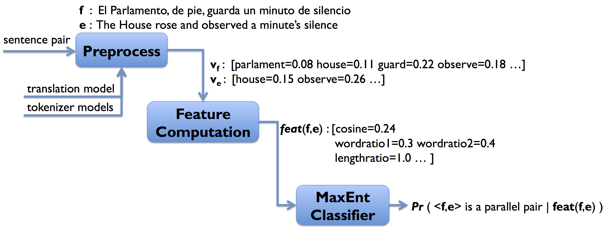
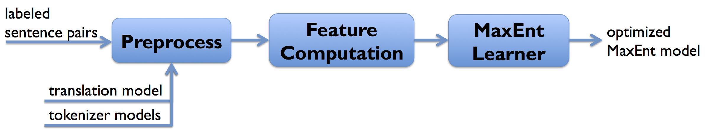

Bilingual text, or bitext (also called parallel corpus) consists of aligned sentence pairs (f,e) where sentences f and e are written in different languages, yet have the same meaning. The task of the bitext classifier is to determine if a given pair should be aligned. There have been many approaches to this problem in the literature, and the most useful features have consistently been length-based and token alignment-based features. Below is a list of features we consider and their detailed descriptions.
- Cosine similarity: A popular similarity measure, defined as the cosine of the angle between two vector representations. In our case, we represent sentences e and f as a vector of term weights. The vector representing f is translated into the vocabulary of e's language using cross-language information retrieval (CLIR) techniques based on Darwish and Oard's paper (2004). For term weighting, we use Okapi BM25 (k1=1.2, b=0.75) in our experiments, although any term weighting scheme is possible.
- Length ratio: The ratio of sentence lengths (i.e., number of tokens).
- Token translation ratio: The ratio of tokens in f that have translations in e, and vice versa. It is possible to enforce a lower probability limit L to the translations of a token fi, by only considering tokens ej such that t(ej|fi)>L.
- Uppercase translation ratio: The ratio of upper-cased entities in f that also appear in e. We define an upper-cased entity as a multi-token span of consecutive upper-cased tokens, such that tokens to the left and right of the entity are lower-cased.
Below is the pipeline of how a given sentence pair is classified:

The maximum-entropy classifier needs to be trained before we can classify any sentence pair. This is done by running a set of labeled sentence pairs through this pipeline, and have the maximum-entropy learner optimize parameters iteratively:

The open-source OpenNLP MaxEnt toolkit (v3.0.0) is used to learn and apply maximum-entropy classification. For training purposes, we sample 1,000 sentence pairs from an available parallel corpus to serve as positive instances. In order to generate negative instances, we randomly pick 5,000 sentence pairs from possible mis-aligned sentence pairs in the corpus (e.g., 7th source-language sentence and 3rd target-language sentence). We do not use all 999,000 possible negative instances for training in order to keep a reasonable positive-negative instance ratio and avoid a biased learning process.increasing training data
compare feature sets
vary L = 0,0.1,...,0.5
different domain?